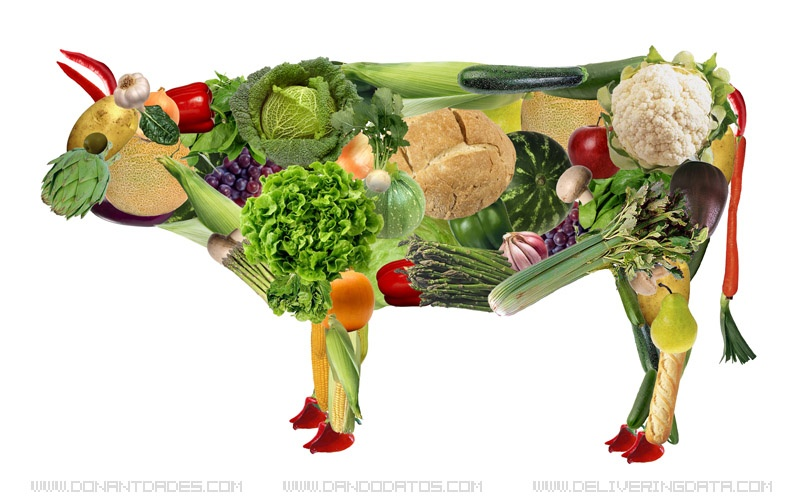

Home | Basic Info | Food and Meal Ideas | Social Implications

- Breakfast:
- Oatmeal with fruit of choice
- Toast with peanut butter or appropriate spread depending on your discipline, dairy free spread or regular
- Lunch:
- Salad with plant-based meat, light dressing topped with veggies(with salads, make sure to read the labels on dressings. Some sneak in different ingredients!)
- Sandwich with veggies and appropriate soup, weather permitting. You could also include your favorite snack food as a side
- Dinner
- Stir fried veggies customized with whichever sauce you'd like. Quick and easy to make and can be tailored to what you have available
- Plant based meats with either potatoes or rice and a large side of whatever vegetables you have or a salad
These are only suggestions. The great thing about this lifestyle is the possibilites on what to make are endless.
You can experiment with what you like, or use the internet to find a way that someone converted your favorite meat dish into a plant friendly version.
Check out this comprehensive list to give you even more options to choose from